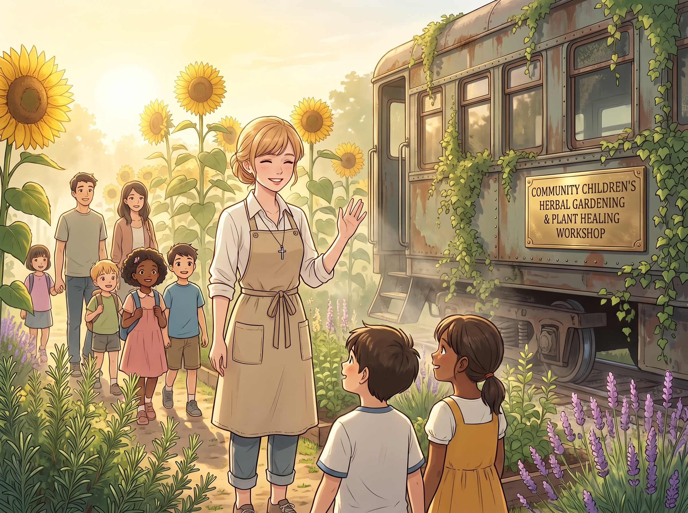
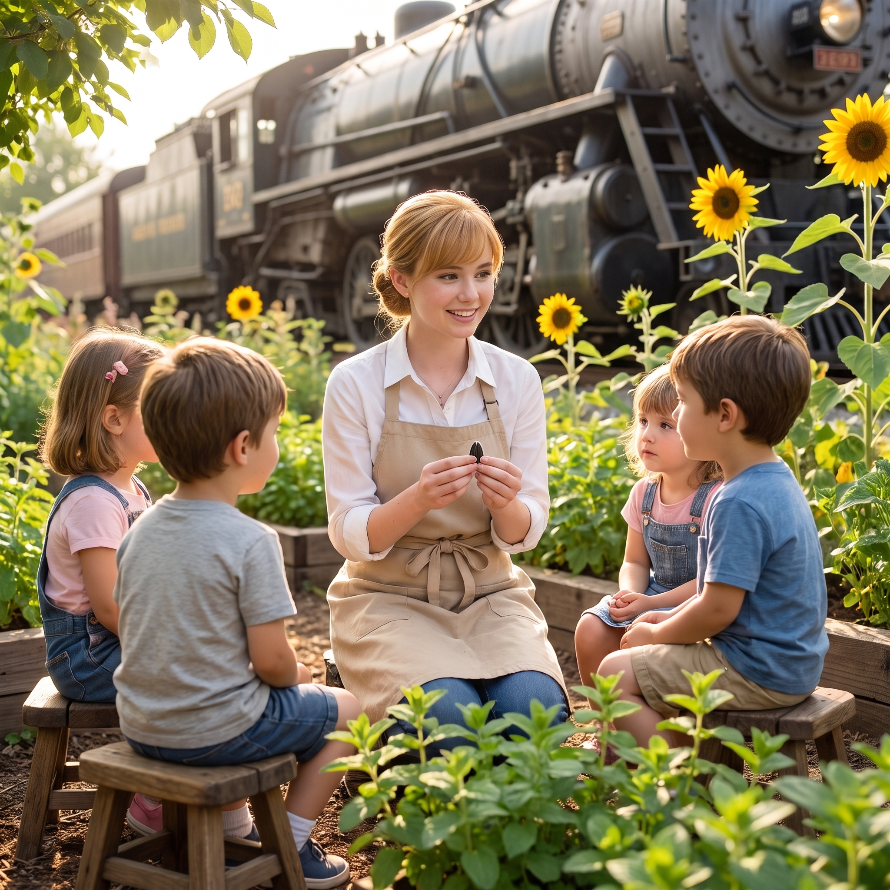
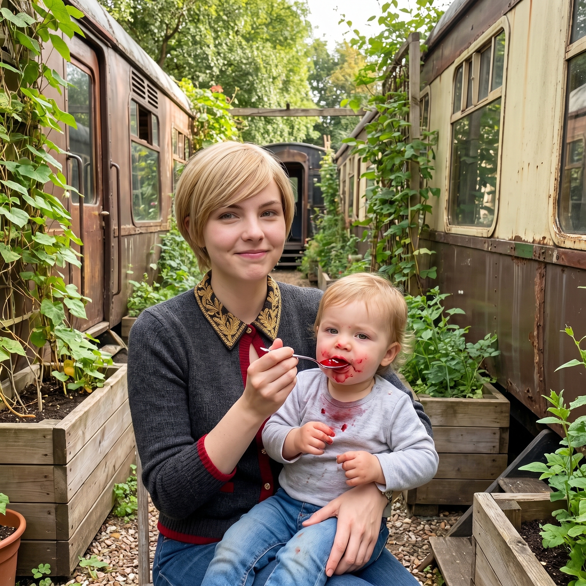

種子與微光



週日早晨九點半，波特蘭東區的舊鐵道花園被明媚的金色陽光徹底點亮。
昨日那場荒唐又溫馨的「全員 Cosplay 鬧劇」早已在歡笑聲中落幕，但空氣裡似乎還殘留著甜甜的藍莓香氣。鐵道兩旁，向日葵正昂首迎著朝陽，迷迭香與薰衣草在微風中舒展著翠綠的葉片，那塊懸掛在車廂外壁上的耐候鋼黃銅招牌，兩側的常春藤在水霧洗禮下顯得格外生機盎然。
今天，是 Kate「社區兒童草本園藝與植物療癒工作坊」開班的第一天。
七八個來自社區諮詢中心的小朋友，在家長的陪伴下陸續來到舊車廂前。孩子們起初有些拘謹，怯生生地看著這節巨大的鋼鐵火車，但在看見站在花園中央、穿著米白色棉麻圍裙、笑得像太陽一樣溫暖的 Kate 時，小小的戒備心瞬間融化了。
一、種子與微光的故事會
Kate 帶領孩子們圍坐在用舊枕木打磨成的環形小木凳上。花園周圍瀰漫著薄荷與泥土的清香，微風吹過向日葵葉片，發出沙沙的輕響。
Kate 蹲在孩子們面前，手裡捧著一顆圓滾滾、黑亮亮的葵花種子，聲音柔和得像撫過溪流的羽毛：
「大家看，這是一顆非常非常小的種子。它被埋在黑漆漆的泥土裡的時候，周圍沒有光，又冷又濕，它可能會覺得有點害怕，以為自己永遠只能待在黑夜裡。」
孩子們睜大眼睛，安靜地聽著。
「但是呀，」Kate 溫柔地看著身前的孩子們，眼神裡閃爍著無比堅定的光芒，「泥土下的種子從來沒有放棄喔。它每天都在偷偷積蓄力量，吸收雨水，等待陽光。突然有一天，『啪嗒』一聲——它破開了硬硬的外殼，向著天空伸展出一雙嫩綠的小手。」
她指了指身後那排高大燦爛的向日葵，嘴角揚起恬靜的弧度：
「看，現在它已經長得比我們所有人都高了，還開出了最燦爛的金黃色花朵。所以呀，無論有時候我們覺得心裡有多黑、有多難過，都要記得，我們每個人心裡都藏著這樣一顆勇敢的種子，只要給它一點點溫水和陽光，它就一定能開出美麗的花。」
環形木凳旁，站在車廂推拉門邊的 Chloe、Max 和 Victoria 靜靜地聽著。
Chloe 靠在門框上，手裡握著的小扳手不知不覺停止了旋轉，眼底浮現出一抹深沉而溫柔的光彩；Max 端著相機，透過取景器看著沐浴在晨光中、宛如聖母般治癒著所有人的 Kate，指尖輕柔地按下了快門；而 Victoria 則默默抿了一口咖啡，眼角閃過一絲不易察覺的動容。
她們比任何人都明白，Kate 講的，正是她自己走出陰霾、擁抱新生的故事。
二、硬核工坊的神仙助教團
故事講完後，進入了最熱鬧的手作栽種環節。Kate 要帶領孩子們把薄荷與迷迭香幼苗移植到小陶盆裡，並寫上專屬的「植物成長心願牌」。
這時，工坊的其他三位「高層」自然而然地加入了這場治癒行動。
Chloe 雖然平時脾氣暴躁，但在孩子們面前卻展現出了驚人的耐心。她蹲在地上，用小木工刨刀將一塊塊小雪松木板削成平整的花籤，還用黑檀木雕刻刀在上面幫孩子們刻上名字。
一個戴著小眼鏡的小男孩膽怯地摸了摸 Chloe 耀眼的藍頭髮：「大姐姐，妳的頭髮好像大海的顏色喔，好酷！」
Chloe 愣了愣，隨即豪爽地大笑起來，摸了摸小男孩的頭，甚至破天荒地把自己口袋裡最喜歡的薄荷糖塞到了孩子手裡：「那是當然！等妳這盆向日葵長大，老娘帶妳去威拉米特河上開皮卡快艇！」
Victoria 雖然嘴上說著「我才不擅長處理小孩子的泥巴問題」，但她卻穿著俐落的襯衫，優雅地端著托盤，給每個孩子分發她專程訂購的高級無添加入口即化果凍，以及 Kate 特調的冰鎮洋甘菊草本茶。
每當有小女孩不小心把泥土弄到了衣服上，Victoria 都會遞上帶有薰衣草香氣的濕紙巾，動作熟練而輕柔地幫她擦乾淨，嘴角掛著極其罕見的溫柔淺笑。
Max 穿梭在花園裡，像個敏捷的小貓一樣捕捉著最動人的瞬間：孩子們用小泥手捧著陶盆的專注表情、Kate 手把手教孩子填土時溫柔的側影、Chloe 笨拙地幫小女孩繫鞋帶的吃鱉模樣，以及 Victoria 給孩子餵果凍時那一抹轉瞬即逝的傲嬌笑容。
三、盛夏正午的平靜與新生
中午十二點，工作坊圓滿結束。
孩子們捧著自己親手栽種、插著手工木籤的小陶盆，牽著家長的手，依依不捨地向四人揮手告別。那個原本有些自閉的小男孩，在走之前甚至跑上前，輕輕抱了抱 Kate 的腰，小聲地說了句：「謝謝 Kate 姐姐，我的小種子一定會長大的。」
鐵道花園重新歸於平靜。
微風吹過向日葵與薰衣草，空氣裡全是泥土、草本精油與陽光的香氣。
四個人累得直接坐在車廂門口的木質台階上，膝蓋挨著膝蓋，分食著 Kate 烤好的草本司康餅，享受著難得的悠閒正午。
「不得不承認，」Victoria 靠在木門邊，伸長了纖細的雙腿，看著遠處孩子們離去的背影，輕聲說道，「看著那些小傢伙拿著植物笑起來的樣子……這間工坊的投資回報率，比我想像的要高得多。」
「那是因為有我們的大天使在啊。」Chloe 靠在 Max 肩頭，嘴裡咬著司康餅，笑得肆意而滿足，「看吧，老娘就說過，這裡會是全波特蘭最棒的地方。」
Max 默默握住了 Chloe 的手，另一隻手拉住了 Kate，而 Kate 則笑著靠向了 Victoria。
陽光透過常春藤的葉片，在四人的身上撒下點點金色的斑駁光影。金屬的剛硬、植物的柔美、記憶的沉澱與當下的幸福，在此刻的波特蘭東區，交織成了一首永遠不會停歇的夏日讚歌。